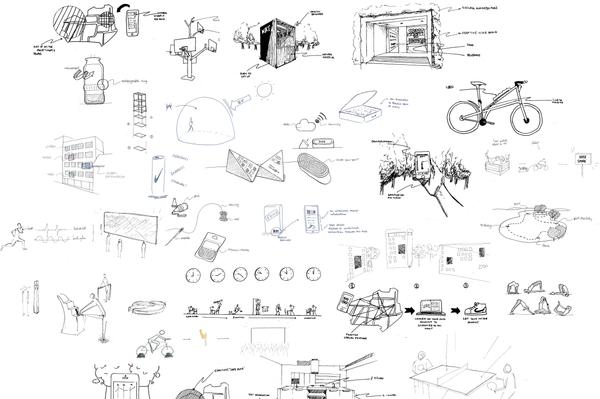
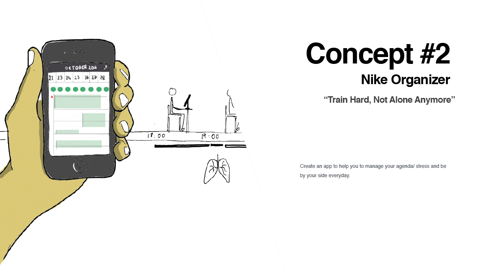

NIKE INNOVATION PROJECT
Team management, Design process, project management, 3D, Sketches
1 Intensive week
How can we create a new vision of the brand, by analising consumer’s lifestyle ?
In collaboration with Overlay (Retail Agency) we had the opporutnity to work on a new vision of Nike’s retail shop.
Who : Our target were the students of Shanghai University (Core target) with the opportunity to extend to other universities in Shanghaï
What : The idea was to create a new lifestyle for the students. How can we make them loyal for the brand. Create new habits ? Be and accimpany them at any moments ? How can Nike be a part of their everyday life ?
Where : As I told you before, the idea was to create a new place of interaction for the students in their university.
When : The often the better, Try to be with them at any moment of the day. But in order to do so, we had to define what were their daily life and daily habits.
Design Process
Analisys of Nike's competitors:
First, we analyze what Nike represents to us. What are the direct and undirect competitors (Adidas, Babolat, Puma, Xiaomi, Red Bull, etc…) What are the related industries (Fashion Industries, Gym, Health etc…) And finally what are the less related industries link to Nike (Mc Donald, Nasa, Food&Drink). This led us to define what are Nike’s brand values ?
Storyboarding Consumer's life:
Then we used differents tools to depict the consumers lives. We took magazines and collected pictures to represent the Chinese students' world. And by adding some qualitive data thanks to interviews or observations, we were able to create a quit accurate persona.
Interviews:
In order to validate the created profile and probe our observations, we drove interviews with a group of Chinese students. This brought us some new insights.
Ideation : 50 ideas a day
This challenge was the most difficult one in the entire week. The goal was to produce, thanks to all the tools we used before, 50 different ideas about our Vision Of Succes : Green Lifestyle.We Put them on paper we then selected the best ones and combined some to end with 5 solid concepts that we had to present the following day

Conception
Based on the 50 ideas we create, we were asked to gather them in 5 different concept.
Each one of them needed to be as much developped as possible. On a design level but also on a business level.

Final Concept : « RUN, DRINK, BREATH »
As a final concept we decide to create a Green PopUp Store. The goal is to create a new « Green » lifestyle for the students, by going with them in the post workout session. Trigger in them the desire for healthiest products.
We also create a Nike’s water bottle. This one has for purpose to enhance the relationship between the students and the brand, by giving them some discount voucher on the product if they bring the Water Bottle.